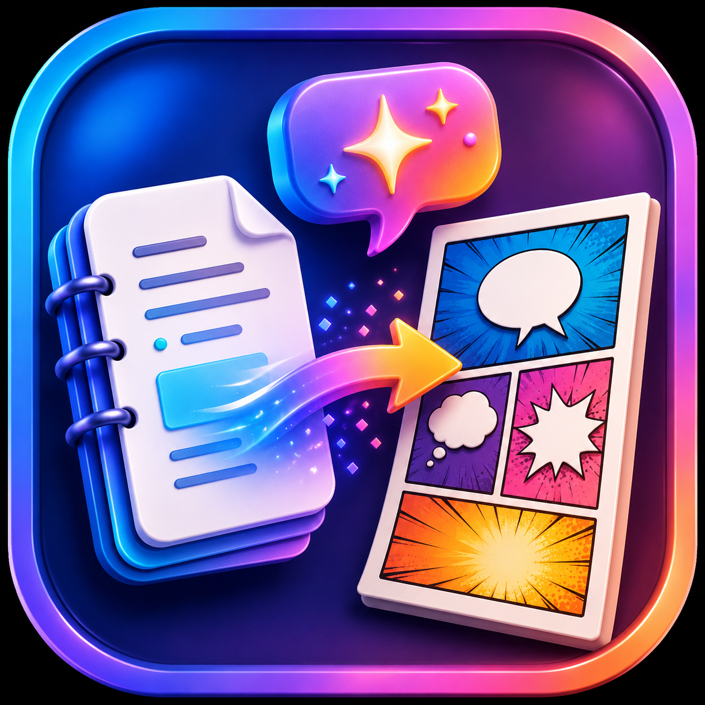

EN
BM

NLM to Comixs Prompt Generator
Create comic scripts from NotebookLM data easily.
Mode
Infographic (One Page)
Slide Deck (Series)
Orientation
16:9 (Landscape)
9:16 (Portrait)
1:1 (Square)
4:5 (Social Media Post)
Art Style
Semi-Realistic Anime
3D Pixar Style
Classic American Superhero Comic
Vintage 1950s Cartoon
Modern Webtoon Flat Style
Bold B&W Thick Outline Doodle
Cyberpunk Neon Art
Minimalist Vector Illustration
Visual Language
English
Bahasa Melayu
Arabic (RTL)
Comic Panels
1
2
3
4
5
6
Generate Prompt
Output Prompt
Prompt will appear here...
Copy to Clipboard